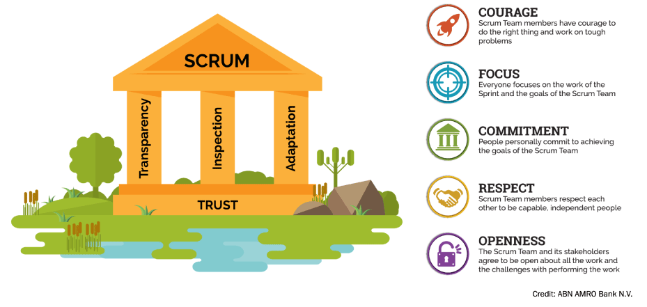

HB - DWWM - Scrum
Damien DUBOST
09/06/2023
Introduction
Utilisation de Scrum
Qu'est-ce que Scrum ?
Scrum signifie "mélé"
C'est une méthode agile d'organiser un projet avec des principes et règles strictes
Les fondations
Le fonctionnement

Les parties
- La Scrum Team
- Les Scrum Events
- Les Scrum Artifacts